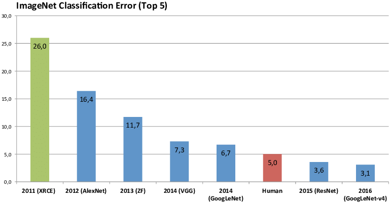
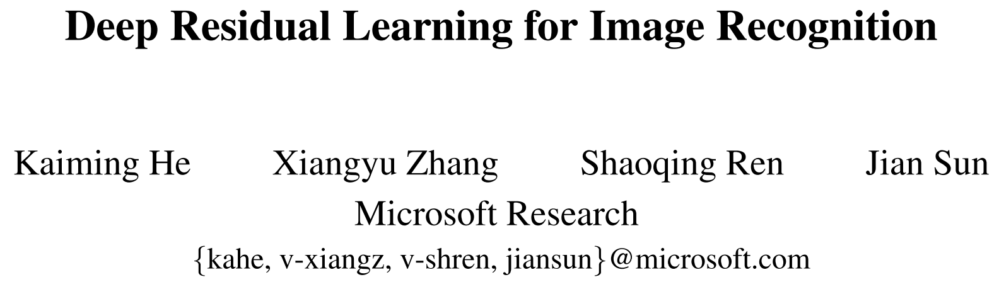
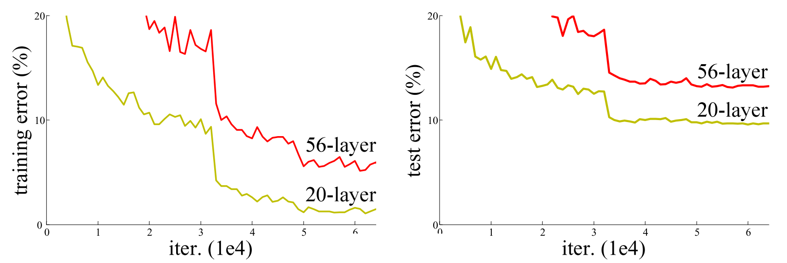
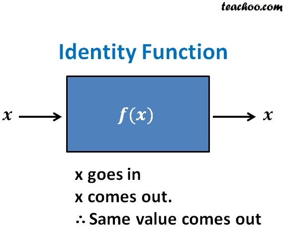
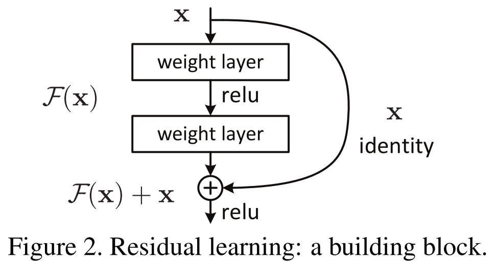
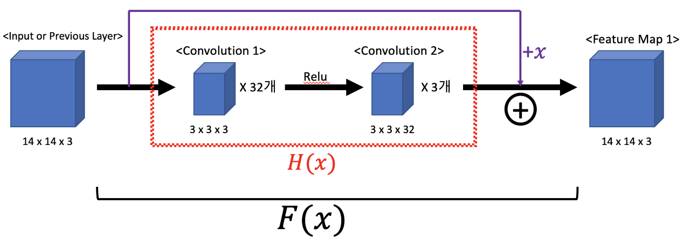
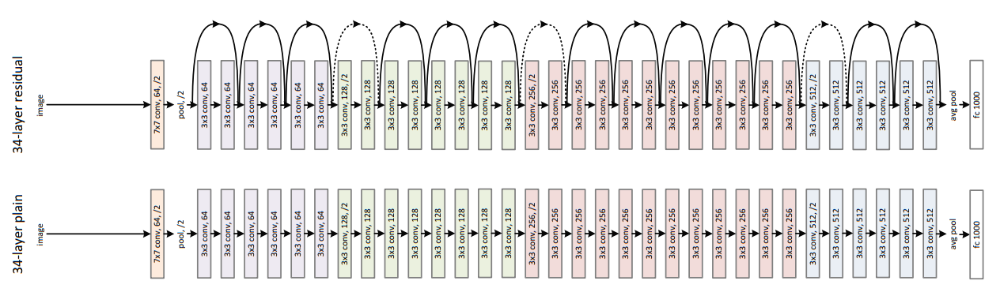
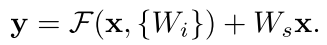

+) ResNet이 1000장 정도 쌓이면 성능이 저하되는 문제를 해결하기 위한 추가 연구는 글 맨 아래에 있음
ResNet
마이크로소프트 팀이 소개한 ResNet 모델입니다.
Residual 이라는 새로운 방법이 도입되었습니다.

ILSVRC 2015에서 처음으로 Human recognition보다 높은 성능을 보이며
1위를 차지한 152 layer의 모델을 알아봅시다.
↓ 논문 링크 ↓
더보기
딥러닝 ResNet 논문 리뷰 pytorch 파이토치 tensorflow 텐서플로 code 코드

Abstract
역대 ILSVRC 대회를 보면 depth가 커질수록 성능은 좋아지지만
overfitting, gradient vanishing, 연산량 증가 등의 문제가 있다.
그래서 이전에 사용된 것보다 훨씬 더 깊은 네트워크의 훈련을 용이하게 하기 위한
Residual Learning (잔여 학습) 프레임워크를 제시한다.
Introduction
이 논문에서 이야기하는 문제는 Degradation Problem이다.
Network가 깊어질수록 성능이 저하되는 문제이다.
Train accuracy와 test accuracy가 둘 다 낮아진다는 점에서 overfitting과 다르다.

이 논문은 degradation의 문제가 더 깊은 레이어가 쌓일 수록
optimize가 복잡해지기 때문에 일어나는 부작용으로 보고 해결하려고 한다.
간단하게 Identity mapping layer 추가해봤지만 결과가 좋지 못했다.
이때 Identity Mapping은 입력과 함수 출력값이 동일한 것이다.

똑같은 x값을 나오게 하려면 활성함수가 y = x 처럼 선형함수여야 한다.
그런데 CNN은 Relu 같은 비선형 함수를 활성 함수로 사용한다.
그래서 CNN에서 Identity Mapping을 가능하게하기 위해
Deep residual learing framework 개념을 도입한다.

✍🏻 Instead of hoping each few stacked layers directly fit a desired underlying mapping, we explicitly let these layers fit a residual mapping. 쌓여진 레이어가 그 다음 레이어에 바로 적합되는 것이 아니라 잔차의 mapping에 적합하도록 만들었다.
F(x) = H(x) + x
H(x) = F(x) - x
이 때, 임의로 만든 함수 H(x)는 잔차(Residual)가 된다.
위 등식에서 Identity Mapping, 즉 F(x) = x를 가능하게 하려면 H(x)를 0으로 만들어야 한다.

이때 보라색 add 할 때 배열의 차원 수를 같게 해야 한다.
Input or Previous Layer와 Feature Map의 shape를 맞춰 주어야 한다.
그래야 add 연산을 할 수 있다.
이 add 연산을 shortcut 또는 skip connection 이라고 한다.
이런 skip 과정 덕분에 forward, backward path가 단순해졌다.
또, 역전파 과정에서 F(x) = H(x) + x 를 아무리 미분해도
1이 남아 있기 때문에 기울기 소실 문제를 예방할 수 있다.
위와 같은 과정을 Residual Block 이라고 부른다.
Deep Residual Learning
Residual Learning
Residual mapping이 기존의 mapping보다 optimize하기 쉽다는 것을 가정한다.
이전에는 알지 못하는 최적의 값으로 H(x)를 학습시켜야 한다는 어려움이 있었다.
F(x) = x 라는 최적의 목표값이 사전에 제공되기에 H(x) 학습이 더 쉬워진다.
0이라는 숫자 개념으로 잔차를 수렴하게 하는 것이 더 쉽기 때문이다.
Identity Mapping by Shortcuts
F(x) + x 는 네트워크 구조 또한 크게 변경할 필요가 없다.
입력에서 출력으로 바로 연결되는 shortcut만 추가하면 되기 때문이다.
입력과 같은 x가 그대로 출력에 연결되기에 추가적인 파라미터도 필요없고
복잡한 곱셈 연산도 필요없는 것이 장점이다.
Network Architectures
Plain Network
Baseline 모델로 사용한 plain net은 VGGNet을 참고했다.
모두 동일한 feature map 사이즈를 갖게 하기 위해서 레이어 들은 동일한 수의 filter를 가진다.
feature map 사이즈가 절반이 되면 filter 수는 2배가 되도록 한다.
Conv layer 는 3 x 3 filter, stride 2로 down sampling.
이때 down sampling이란 더 작은 이미지로 크기를 축소시키는 것이다.
VGGNet에서는 출력 feature map 크기를 줄일 때 max pooling을 사용하였지만
ResNet은 복잡도를 줄이기 위해 차원이 바뀌는 블록의 첫 번째 convolutional layer에서
stride를 2로 사용하여 feature map 크기를 줄인다.
global average pooling layer 사용한다.
마지막에는 softmax로 1000-way fully-connected layer를 통과시킨다.

Residual Network
Plain Network에 shortcut connection을 도입했다.
Input과 output의 차원을 맞춰주기 위해 차원을 증가시켜야 하는데, 두 가지 방법 사용
(A) 0을 넣어서 padding

(B) Ws로 linear projection
Implementation
- Image resized 224 x 224
- Batch normalization 사용
- Initialize Weights
- SGD, mini batch 256
- Learning rate 0.1
- Iteration 60 * 10^4
- Weight decay 0.0001, momentum 0.9
- No dropout
ResNet Code
Pytorch로 ResNet 구현
GitHub - imkmsh/DeepLearningContribute to imkmsh/DeepLearning development by creating an account on GitHub.github.comTensorflow로 ResNet 구현
GitHub - imkmsh/DeepLearningContribute to imkmsh/DeepLearning development by creating an account on GitHub.github.com( + + + )
ResNet이 1000장 정도 쌓이면 성능이 저하되는 문제를 해결하기 위한 추가 연구
↓ 링크 ↓